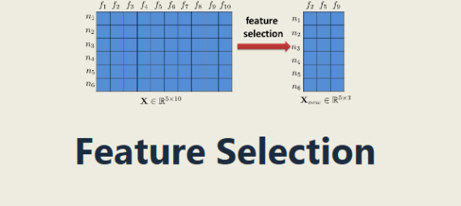

Discriminative Data Analytics
Proposed algorithm can distinguish symtoms unique to COVID-19 (e.g. Shortness of breath, loss of taste) from symptoms shared by COVID-19 and Flu (e.g. Fever, Cough). Analyzing data from successive years using the algorithm can be helpful in making predictions about potential pandemics.

Feature Selection using Discriminative Analysis

Using proposed discriminative analysis algorithm, DNA, we can rank features in a dataset and perform feature selection. Using only 1% features, we obtained similar prediction accuracy with shorter convergence time in supervised and unsupervised learning settings.
Data Wrangling and Extract Useful Information from a complex data
I worked with data that required data wrangling to retrieve information that was useful. created a relational database with tables employing several pieces of data, including nations, regions, clients, goods, and orders. Identify the top-selling items, nations, and regions for each category (for example, Country) based on the total quantity of sales. Finally, additional very interesting information has been provided using dashboard in Tableau.
Data Exploration, Visualization, Cleaning and Correlation
USA was one of the biggest victim of COVID-19 in terms of COVID-19 cases, death counts and was one of the top contries to respond against it with rapid vaccination. New cases were decreased significantly after November 2021 in USA. Total death count was highest in Europe among continents. Vaccinations started in USA on December 2020 and by May 2022, 66.65% people were fully vaccinated.
Custom object recognition project using YOLOR

The trained model is capable of finding objects with excellent accuracy from the list of 10 collected and annotated objects. Mean Average Precision (mAP @ 0.5) of 72.8% after training the model for 500 epochs. Using YOLO-v4 on the same dataset 71.09% of maP @ 0.5 achieved after 500 epochs. Detection time improved 63% using YOLOR compared to YOLO-v4.